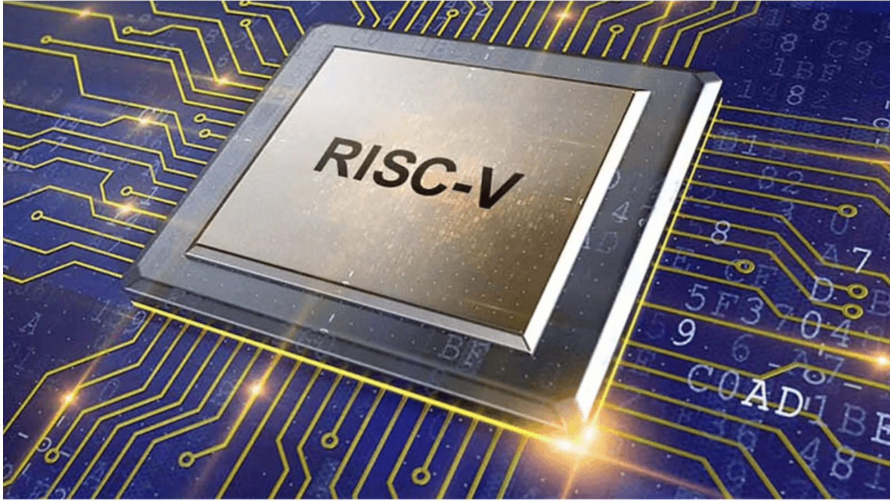
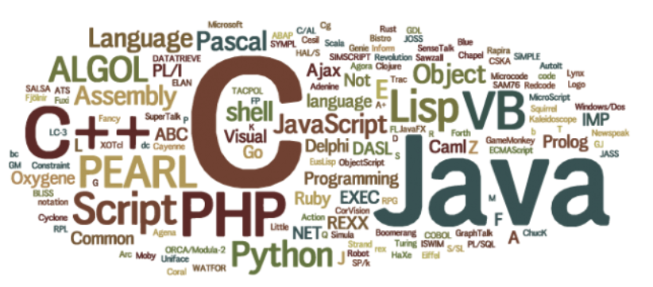

Nikhil Kumar / Portfolio
Projects
AI-Generated Renderings from Plans
In progress
Our senior design project focuses on generating photorealistic 2D visualizations from building plans, with an emphasis on material texturing. The project aims to help communicate how a planned space could look by translating plan information into visual representations.
RISC-V Processor Design
VHDL · RISC-V Assembly
Designed 32-bit single-cycle and pipelined RISC-V processors in VHDL. The designs integrated an ALU, register file, control unit, instruction decoder, program counter, and memory interfaces, supporting arithmetic, logical, memory, and control-flow instructions.

My Role
My work included implementing processor components and verifying their behavior through testbenches, simulation, debugging, and RISC-V assembly programs.
Skills and Knowledge Gained
This project developed my understanding of processor datapaths, control logic, instruction execution, and the differences between single-cycle and pipelined architectures. It also strengthened my VHDL development and simulation-based debugging skills.
Vent Programming Language
Go
Built a general-purpose interpreted programming language in a two-person team. The language uses a modular lexer, parser, abstract syntax tree, and interpreter. It supports primitive types, arrays, type inference, user-defined functions, and control flow, with a reference-counted runtime for dynamically allocated objects.

My Role
I completed most of the design and implementation of Vent as part of a two-person team.
Skills and Knowledge Gained
This project strengthened my understanding of language implementation, parsing, runtime behavior, and memory management. It also provided experience organizing a modular codebase and collaborating on a substantial software project.